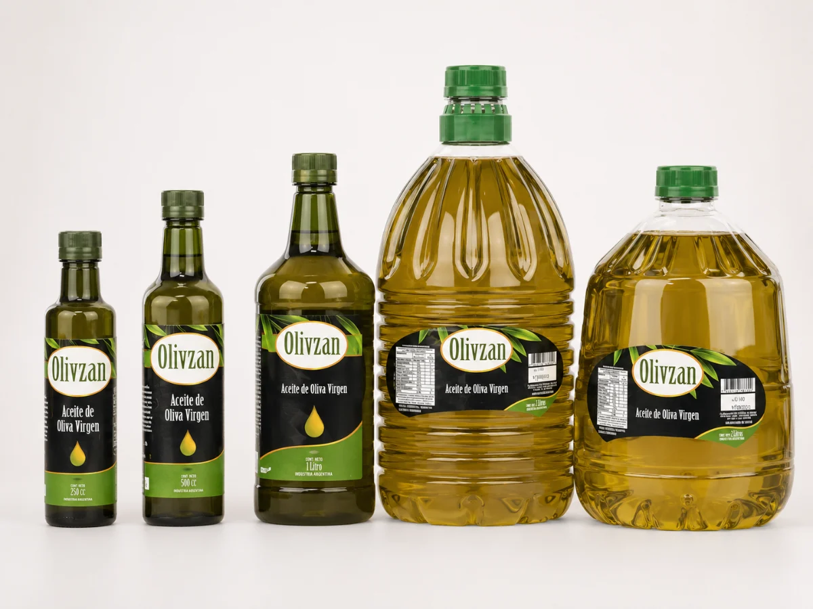

Olivzán · Aceite de oliva para todos los días

Olivzán es un aceite cercano, versátil y pensado para el uso cotidiano. Forma parte de la historia de la familia y de la relación construida durante años con comercios, distribuidores y consumidores.
Es un producto reconocido, presente en muchas mesas y elegido por quienes buscan incorporar aceite de oliva a su cocina habitual. Durante esta nueva etapa, Olivzán seguirá ocupando ese lugar: su incorporación al universo Gaddi permitirá mostrar con mayor claridad el origen, la familia y el trabajo que están detrás.
Olivzán, una marca de Gaddi.
- Denominación
- Aceite de oliva virgen
- Formatos
- 250 cc · 500 cc · 1 L · 2 L · 3 L · 5 L
- Envase
- Vidrio y PET